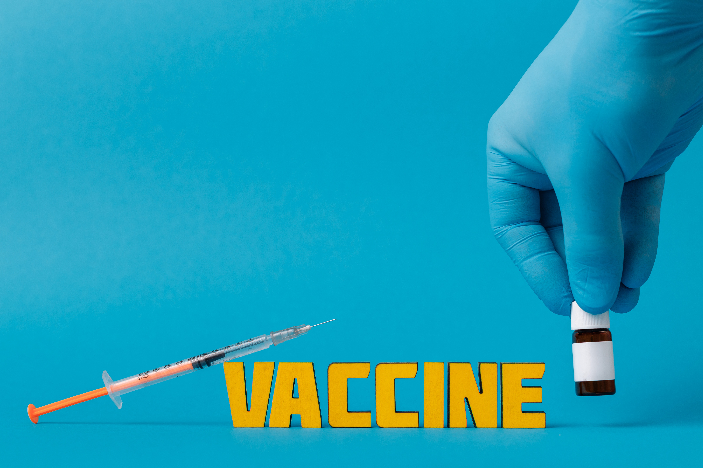

Facilities our awareness program have
Prioritizing locations for targeted interventions to reduce the impact of COVID-19 on other diseases. This could be based on COVID-19 prevalence, as well as burden of non-COVID-19 diseases or the need for services (i.e. immunization services), and population size.

Vaccination

Quarantine Treatment